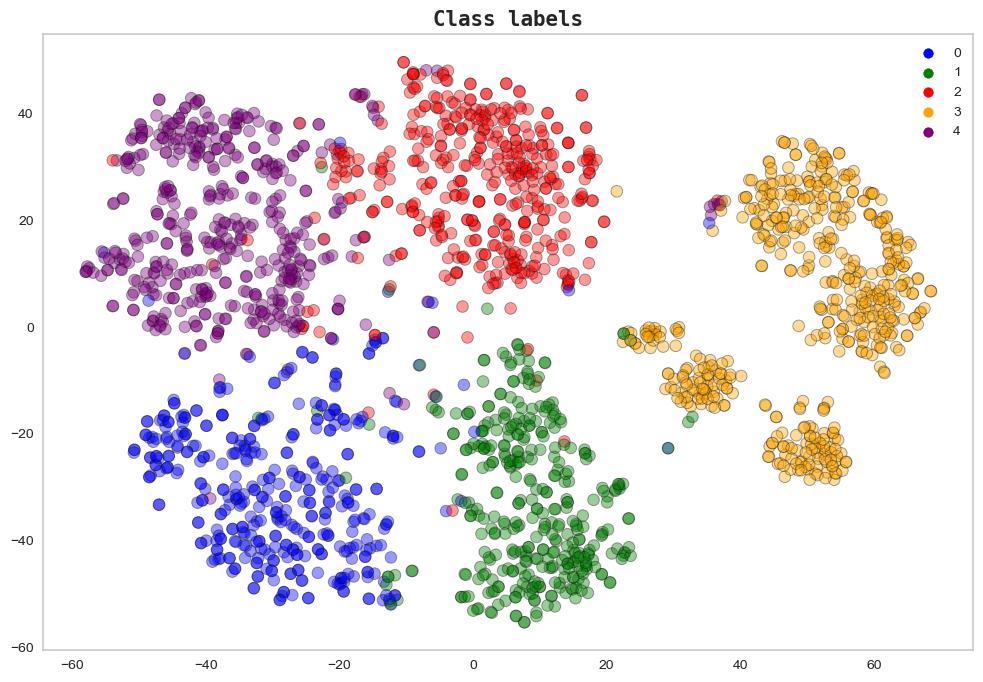

In this project, we create a multi-class classifier capable of predicting a bank customers credit
score using 63 features. The dataset used for this project contains outliers, missing values,
and bad data, so extensive data cleaning and preprocessing was done.
A voting classifier consisting of four (4) estimators was used to create the final model.


In this project, we create a simple regression model using the used car price dataset. Five (5)
estimators were used to train the final voting regressor model which achived an R2 of 95%.

In this project, we create two (2) text clustering models with different techniques and compare
their performance
In this project, we create a news category classifier that can distinguish 42 news category. A
keras functional model with three(3) input layers and embedding layers trained from scratch was
used

In this project, we create a text summarizer using a large language model

In this project, we use a universal encoder to search for similar texts

In this project, we build a book recommendation system using Tensorflow Recommenders (TFRS). The
model leverages
the power of deep learning and recommendation algorithms to suggest personalized book
recommendations based on user preferences

In this project, we use a pre-trained enhanced super resolution GAN model to improve the
resolution of 3 selected images
In this project, we create a model capable of classifying 100 sports with 95% accuracy using a
pretrained ResNet-50 model

In this project, we perform an unsupervised learning task on a customer dataset.
Unsupervised learning tasks like customer segmentation are important because they provide
valuable insights into patterns and groups within a dataset without relying on predefined labels
or targets.
This can allow companies understand their customers better, provide value and drive their
growth.
In this project, we create a streamlit app that can segment digits and operators to perform basic
math calculations.
*Please wait a few minutes for the app to boot.

In this project, we create an app that can predict salary based on job title, degree, major,
industry, and years of experience.
*Please wait a few minutes for the app to boot.

In this project, we create LSTM, GRU, & Seq-2-Vec/Seq-2-Seq CONV-LSTM models capable of
predicting future oil production rates.
In this project, we compare the performance of three (3) convolutional neural network models
trained without image augmentation, with image augmentation, and with transfer learning.

In this project, we perform comprehensive feature engineering to create useful features that can
be used to predict the results of a Premier League match, as well as the final seaon table using
a multioutput regressor.
In this project, we create a classification model that can accurately predict the satisfaction
levels of airline passengers. Additionally, we delve into the concept of precision/recall
trade-off, its implementaion, and how it applies to various business scenarios that require
higher precision or recall.
In this project, we create a binary classifier with a high recall that can predict if a patient
has breast cancer.
In this project, we create a wikipedia text summarizer using nltk and a word frequency table.